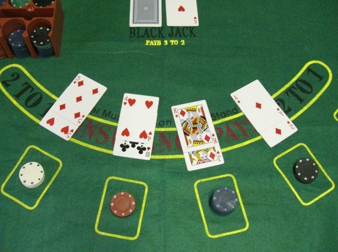

Le BlackJack est un jeu de cartes populaire dans les casinos physiques et les casinos virtuels.
La partie oppose individuellement chaque joueur à la banque. Le but est de battre le croupier sans dépasser le score de 21. Dès qu'un joueur fait plus que 21, on dit qu'il « brûle » et il perd sa mise initiale. Les valeurs des cartes sont les suivantes :
Source :Wikipedia
Le principe de doubler est lorsque le dealer nous a donné nos 2 cartes, nous pouvons doubler notre mise et alors avoir une carte de plus. Le risque étant que lorsque nous doublons, nous ne pouvons plus tirer de nouvelles cartes. Vous avez la possibilité au casino de demander à ce que la carte soit face caché pour plus de suspen
Le principe de séparer est possible seulement lorsque nos deux cartes distribuées ont la même valeur. Lors du split nos 2 cartes sont séparées et nous avons alors 2 jeux de paires de cartes avec lesquels nous jouons (nous devons par ailleurs doubler notre mise pour que chaque paire de carte joue avec la même valeur de jetons). Lors du split le dealer donne une nouvelle carte pour compléter la paire et nous avons toujours la possibilité de doubler ou séparer nos cartes. Habituellement nous pouvons séparer que 4 fois maximum au casino